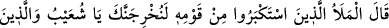
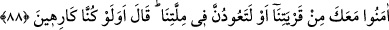

müslümanların ise yok.” dediler ve şöyle devam ettiler: “Hak bizimledir. Eğer hak
onlarla olsa idi, zenginlik ve rahatlığın onların olması gerekirdi.” Şuayb (a.s.) şöyle
buyurdu: Her ne kadar siz iki grup olsanız da “Allah aramızda hükmedinceye kadar”
yani doğru yolda olanlara yardım edip bâtıl yolda olanları helâk edinceye kadar
“sabredin.” bekleyin.
Bu söz, mü’minler için bir va‘d, kâfirler için ise bir tehdid idi.
“Allah hükmedenlerin en iyisidir.” Çünkü O’nun hükmünü değiştirecek kimse yoktur.
Verdiği hükümde de hiçbir haksızlık yoktur. O, hüküm verenlerin en adilidir.
(8. Cüz, 1100 yılı Şevval ayının sonlarında tamam oldu.)
88. Kavminden ileri gelen kibirliler dediler ki: “Ey Şuayb! Seni ve seninle beraber
inananları memleketimizden kesinlikle çıkaracağız veya dinimize döneceksiniz”
(Şuayb): İstemesek de mi? dedi.
“Kavminden büyüklük taslayan ileri gelenler” Şuayb (a.s.)’ın bu öğütlerini
dinledikten sonra “dediler ki: Ey Şuayb,” size olan kinimizden dolayı, komşuluk ve
aynı yerde ikametimizden kaynaklanan fitnenizi defetmek için “ya mutlaka seni ve
seninle berâber inananları” sana tâbî olanları, “kentimizden çıkarırız.”
Önce Sâlih (a.s.)’ı, sonra onunla beraber inananları çıkaracaklarını söylemeleri, Sâlih
(as.)’ı asâleten ve inananları ona tâbî oldukları için çıkaracaklarına dikkat çekmek
içindir.
Ayette mütekebbirlerin ve zorbaların âdetinin üstün olmaya çalışmak ve güçlü olanın
yurdundan zayıf olanı sürmesi olduğuna işaret edilmektedir. Çünkü bu kimselerde elde
ettikleri nimetlerin şımarıklığı, zenginliğin azgınlığı ve despotluğun taşkınlığı vardır.
Dünya sevgisi bütün kötülüklerin başıdır. Fitnesi de her musibetten daha büyüktür. Onun
için Allah Teâlâ, dünyaya kapılanları, yeryüzünde helak ve fesadın sebebi kılmıştır.
Nitekim Allah Teâlâ şöyle buyurmuştur: “Biz bir kenti helak etmek istediğimiz zaman
onun varlıklılarına emrederiz, orada fısk yaparlar, böylece o ülkeye sözümüz hak
olur, biz de orayı darmadağın ederiz” (el-İsrâ, 17/16)
Hâfız der ki:
Dünyanın hevesine kapılıp yoldan çıkma
Bu kocakarı hîlelerle oturur, düzenlerle kalkar
“ya da dinimize dönersiniz” Bilindiği gibi Şuayb (a.s.), asla onların dini ve milleti
üzere olmamıştır. Çünkü peygamberlerin büyük günahlar ve inkar bir yana, zelle dışında